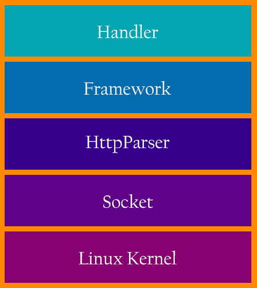
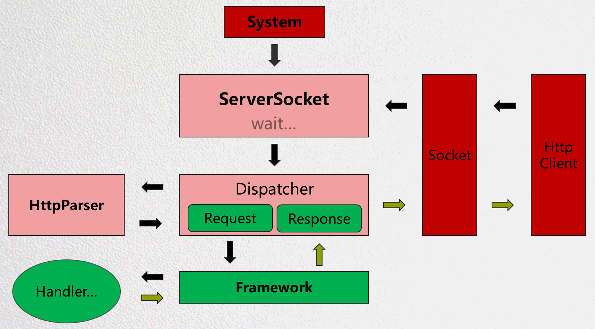
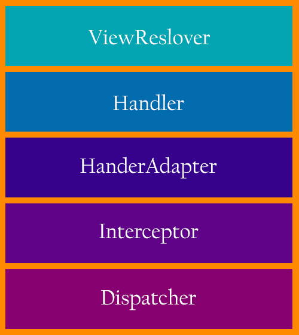
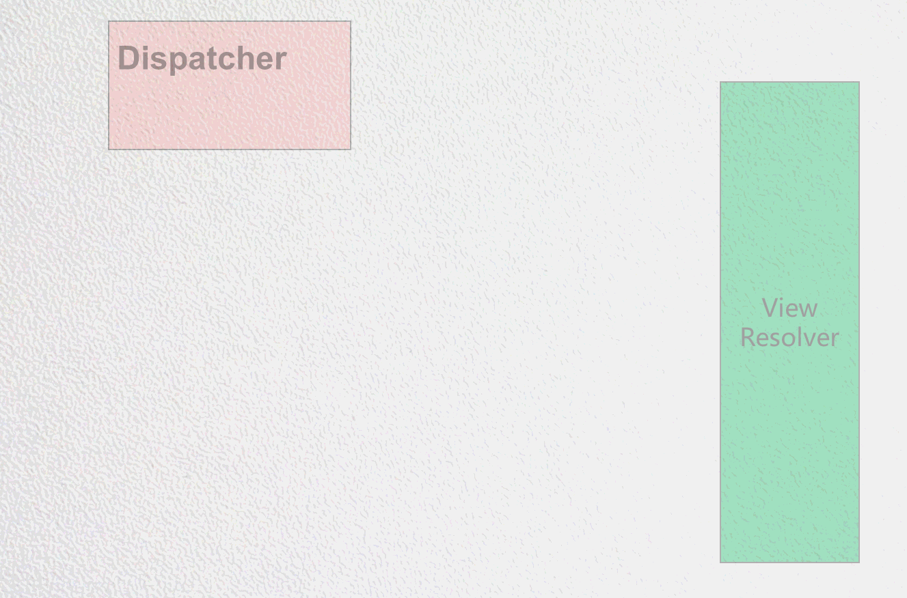

一部分Android开发者看到这个标题时可能有点疑惑，SpringMVC不是用来做JavaWeb开发的吗？难道被移植到Android上来了？答案是否定的，因为SpringMVC是基于Servlet的，在Android上开发一个支持Servlet的容器（Tomcat、JBoss）可不简单，所以我们是在Android上开发了一套全新的WebServer + WebFramework。
AndServer2.0基于编译时注解实现了SpringMVC的大部分注解Api，其Request的分发流程也基本和SpringMVC一致，与SpringMVC最大的不同是SpringMVC基于运行时注解，并且SpringMVC提供的功能更多更强大。不过AndServer提供的功能在Android上来做服务端开发是完全足够的。
看到这里读者朋友应该知道了，AndServer2.0是使用注解开发Web程序的，为了有个更直观的了解，我们先看一个模拟用户登录的Http Api：
@RestController
public class UserController {
@PostMapping("/login")
public String login(@RequestParam("account") String account,
@RequestParam("password") String password) {
if(...) {
return "Successful";
}
return "Failed";
}
}
假设服务端的Address是192.168.1.11，监听的端口是8080，那么通过http://192.168.1.11:8080/login就可以访问该登录Http Api了。
感兴趣的读者可以帮我们做一下Code Review：
https://github.com/yanzhenjie/AndServer
下文将依次介绍以下三点：
我们都知道Http是根据Http协议使用Socket做了连接属性、数据格式、交互逻辑方面的包装，我们来模拟一段服务端启动Server的代码：
public void startServer(String address, int port) {
InetAddress inetAddress = InetAddress.getByName();
ServerSocket serverSocket = new ServerSocket(8080, 512, inetAddress);
while (true) {
Socket socket = serverSocket.accept();
HttpConnection connection = HttpParser.parse(socket);
HttpThead thread = new HttpThread(connection);
thread.start();
}
}
ServerSocket监听了某个端口，当有Socket连接上来的时候去把这个Socket解析为HttpConnection，可想而知，作为服务端程序，HttpConnection至少包涵了Request和Response对象：
public class HttpConnection {
private Request mRequest;
private Response mResponse;
...
}
紧接着启动了一个线程去处理这个Request，怎么处理这个Request是一个WebFramework的核心，假设我们有一个类叫做HttpDispatcher，负责派发请求到Html File或者Java Method处理：
public class HttpDispatcher {
public void dispath(Request request, Response response) {
...
}
}
HttpThead只需要负责调用HttpDispatcher#diaptch()即可，到这里就比较清晰了，只需要HttpDispatcher把当前Request派发到对应的Html File或者Java Method处理就可以了。
这就是一个简单的WebServer的蓝图，我们根据设想画出了系统层架构图：

系统层运行时流程图：

上图中，Handler表示处理请求的操作手柄，可能是Html File或者Java Method。值得高兴的一点是，在我们迭代了几个版本后，发现Apache组织提供了上述蓝图中的HttpParser层，因此为了稳定性和节省人力我们已经替换该层为Apache的实现。
应用层就是上文中提到的WebFramework的核心，也就是上一个小节流程图的Framework层，包括了Session的处理、Cookie的处理、Cache的处理等。
接着上文，HttpDispatcher需要把当前Request派发到对应的Html File或者Java Method处理，而Handler代表了Html File或者Java Method，那么因为此二者区别极大，因此我们想到了使用Adapter模式，所以有了一个抽象类RequestHandler：
public abstract class RequestHandler {
public abstract void handle(Request request, Response response);
}
所以必须得有一个HandlerAdapter去做Handler适配：
public class HandlerAdapter {
public RequestHandler getHandler(Request request) {
...
}
}
因为Html File和Java Method的返回值又是大相径庭，因为返回值是输出到客户端展示的，所以我们把返回值抽象为View：
public class View {
public Object output() {
...
}
}
因为View是返回值，没有具体的交互了，所以不适用Adapter模式了，因此我们必须有一个处理返回值的机制，把处理返回值的机制叫做ViewResolver：
public class ViewResolver {
public void resolver(View view, Request request, Response response) {
...
}
}
这就是一个简单的WebFramework的蓝图，我们根据设想画出了应用层架构图：

应用层运行时流程图：

上图中，Interceptor表示拦截请求的拦截器，比如可以做一些不允许没登录或者没权限的请求进入的工作。ExceptionResolver表示全局异常处理器，比如某个Api发生了异常，会转到ExceptionResolver中处理，而不至于当前请求不响应或者响应了不想被客户端看到的消息。
另外需要补充的是，上文中提到的都是粗略的设计，中间还有一些细节，例如Session的处理、Cookie的处理、缓存的处理等都未提到，其中任何一个知识点单独拿出来都可以写一篇文章，由于篇幅关系这里不做详细介绍。
架构设计和流程到此就都介绍完了，有兴趣的开发者也可以自己实现一下，下面我们将简单介绍一下AndServer的使用。
AndServer对于方便使用的理念是：只需要添加注解即可，不需要再做额外的配置。所以除了像文章开头那样用注解写好Api之外，只需要指定监听端口启动服务器就可以了。
与读者做个约定，下文中服务器Address都是
192.168.1.11，监听的端口是8080。
我们先来部署一个位于Assets中/web下的网站：
@Website
public class InternalWebsite extends AssetsWebsite {
public InternalWebsite() {
super("/web");
}
}
因此SD的文件可以删除也可以增加，想做到热插拔，就署位于SD卡的网站：
@Website
public class InternalWebsite extends StorageWebsite {
public InternalWebsite() {
super("/sdcard/AndServer/web");
}
}
如上所示，开发者只需要将网站所在的路径告诉AndServer，并添加Website注解即可，该网站的Html、CSS、JS、其它文件都可以被访问，例如/web目录下有一个index.html文件，那么访问地址就是http://192.168.1.11:8080/或者http://192.168.1.11:8080/index.html。
在文章开头我们看了一个模拟用户的Http Api，下面我们增加一个模拟获取用户信息的Api：
@RequestMapping("/user")
@RestController
public class UserController {
@PostMapping("/login")
public String login(@RequestParam("account") String account,
@RequestParam("password") String password) {
if(...) {
return "Successful";
}
return "Failed";
}
@GetMapping("/info/{userId}")
public User info(@PathVariable("userId") String userId) {
User user = ...;
return user;
}
}
于是我们得到两个地址：
POST http://192.168.1.11:8080/user/login
GET http://192.168.1.11:8080/user/info/uid_001
AndServer.serverBuilder()
.inetAddress(NetUtils.getLocalIPAddress())
.port(8080)
.timeout(10, TimeUnit.SECONDS)
.build()
.start();
如上所示只需要指定要监听的服务端地址和端口，启动服务器即可。
本人到此就结束，由于篇幅关系，介绍的比较粗略，有兴趣的开发者可以看看项目使用文档：
https://www.yanzhenjie.com/AndServer